Havenscourt Homestead
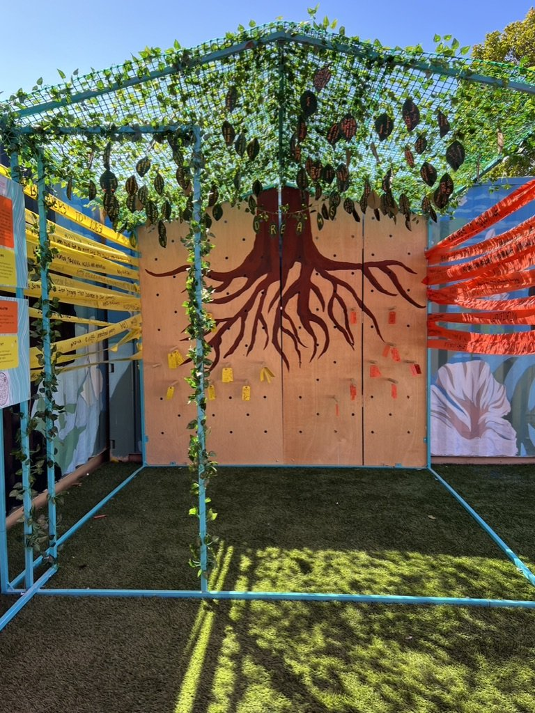
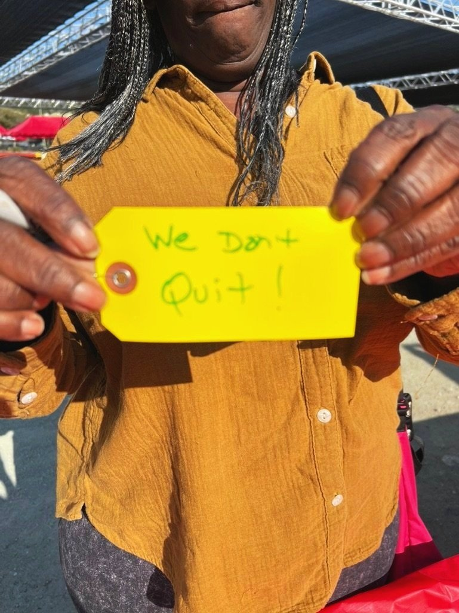
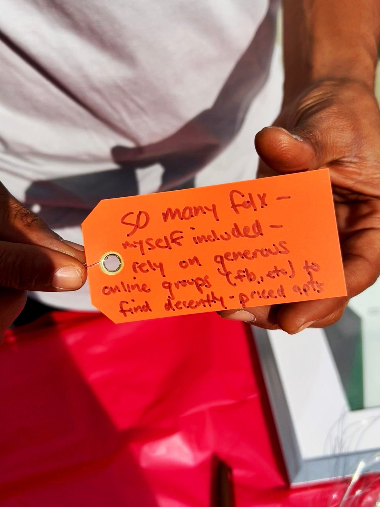
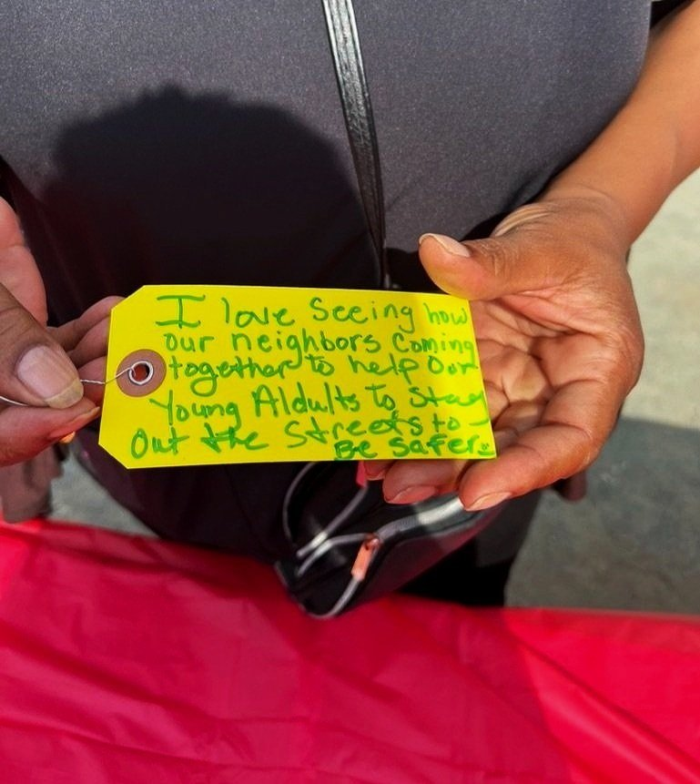
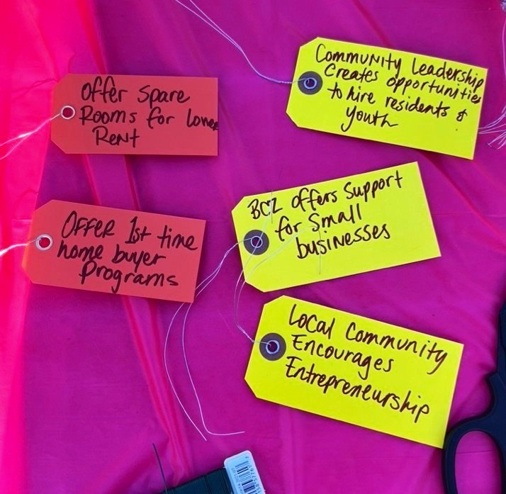
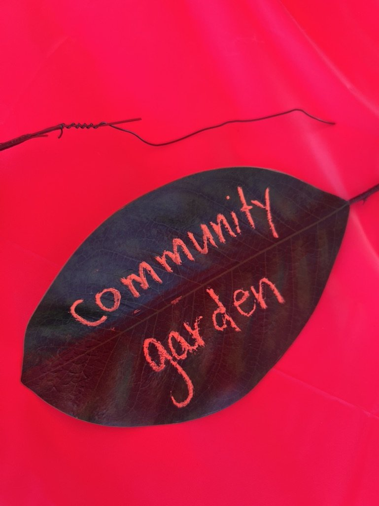
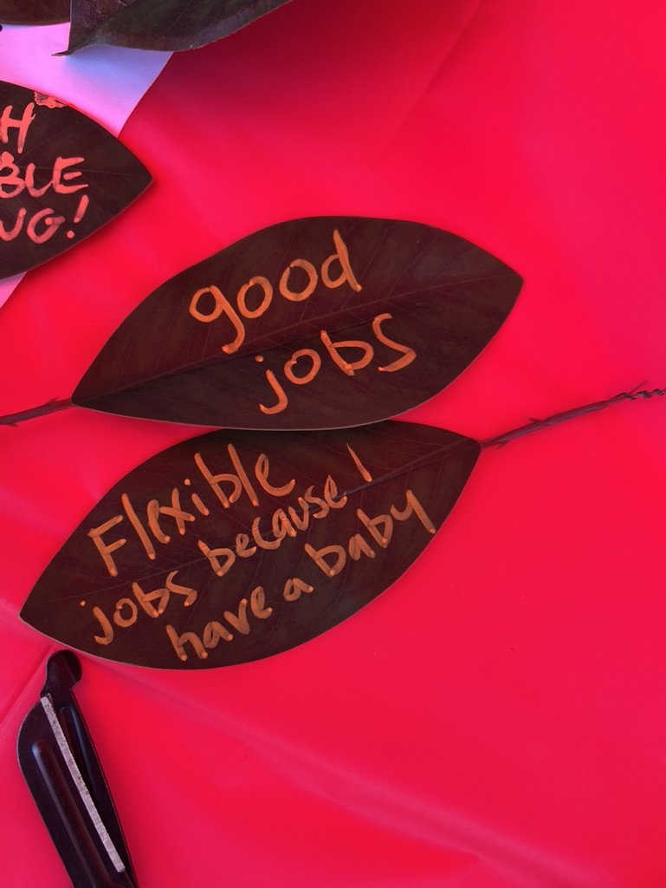
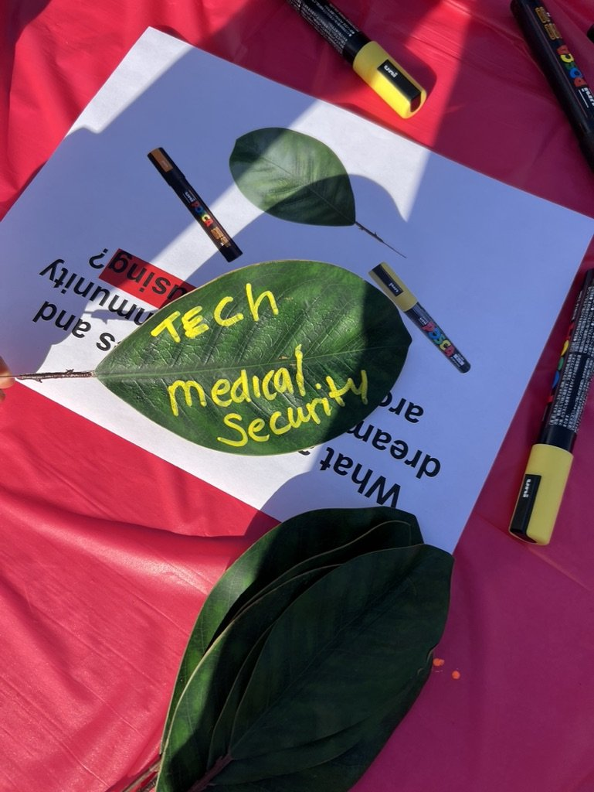
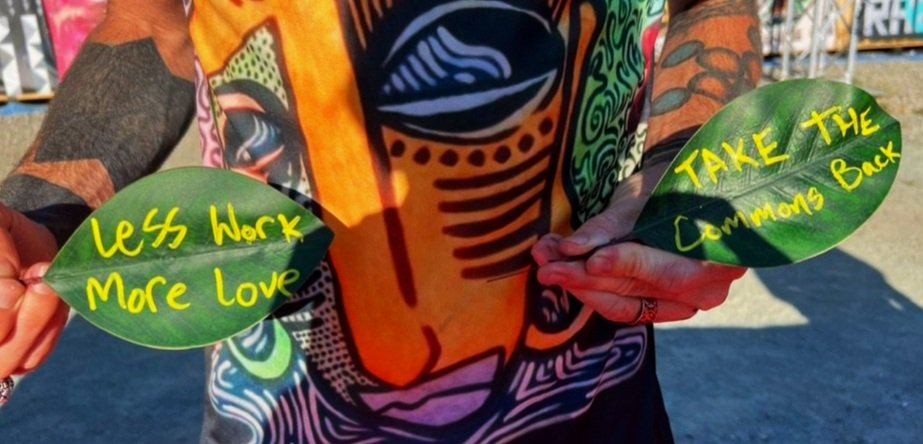
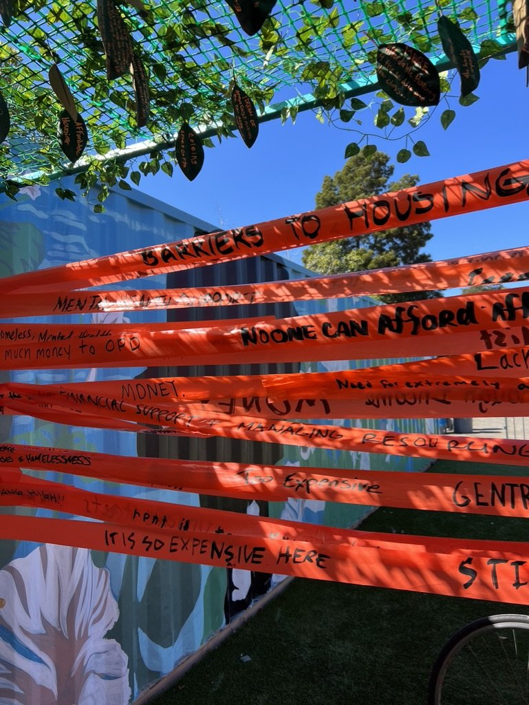
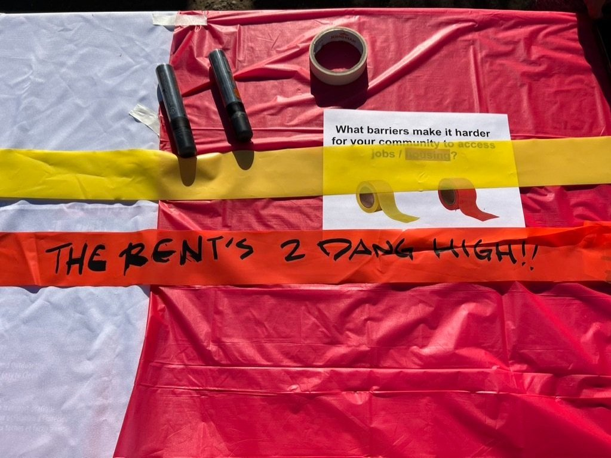
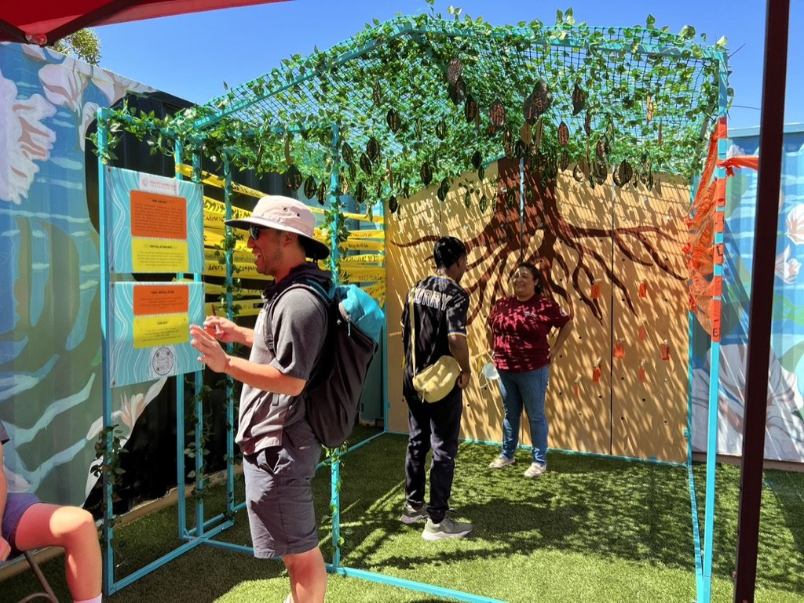
This traveling installation amplifies the voices of residents of the Havenscourt neighborhood in East Oakland to promote community-oriented social change and to create initiatives that improve the well-being of residents in the neighborhood.
Over 200 residents participated in community conversations and expressed their passion, concerns, and dreams for their neighborhood into the installation. What was shared was then used in a community planning process to identify the new action plan priorities for the neighborhood collaborative.
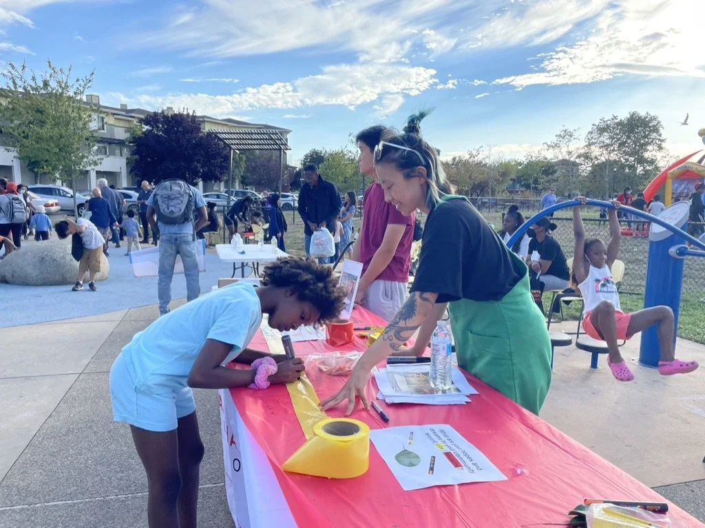
Havenscourt residents shared about their community's strengths, barriers, and hopes and dreams for their neighborhood specific to jobs and housing. Orange pertains to housing and yellow for jobs.